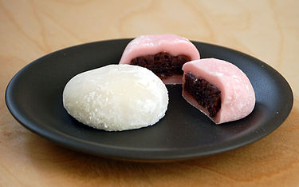
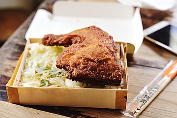
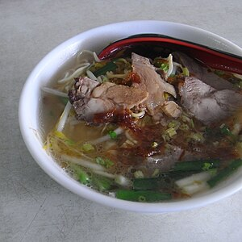
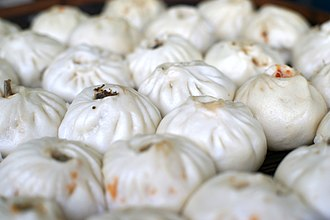

東部 美食  麻糬 是以糯米為主要原料，口感彈牙，有各種口味和配料可選，如花生粉、紅豆等。  池上飯包 來自台灣池上鄉的特色美食，是將飯糰包裹在竹葉或草葉中，搭配鹽醬、魚醬等調味料，帶有濃厚的鄉村風味。  玉里麵 台灣玉里鎮的特色美食，是一種麵條類食物，搭配豐富的湯頭和配料，香氣撲鼻，味道濃郁。  包子 包子是中國的傳統食品，一般是用麵粉混和水後發酵過的麵團內餡蒸製而成，款式非常多。常用餡為各種肉類或各類蔬菜、芝麻、豆沙等等。